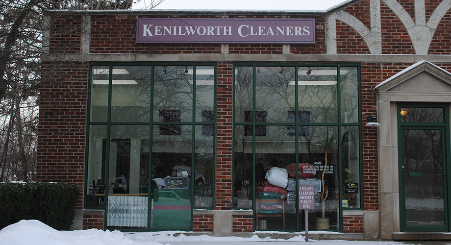
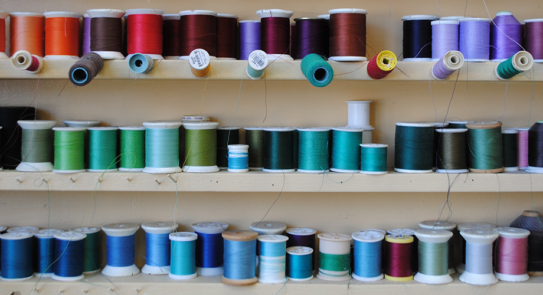

Welcome to Kenilworth Cleaners!
Your neighborhood dry cleaner providing exceptional quality and care for all of your clothing needs.

We meet all your drycleaning needs including:
- Same day service
- Alterations
- Special fabrics
Organic Cleaning
Information about organic stuff!
Pickup and Delivery
DELIVERY!!!!
Hours
Monday - Friday: 7:00 am - 6:30 pm
Saturday: 8:00 am - 5:00 pm
Sunday: Closed
Address
554 Green Bay Road
Kenilworth, IL 60043
Contact
(847) 256-6557
kwak2324@gmail.com
© 2012 Kenilworth Cleaners